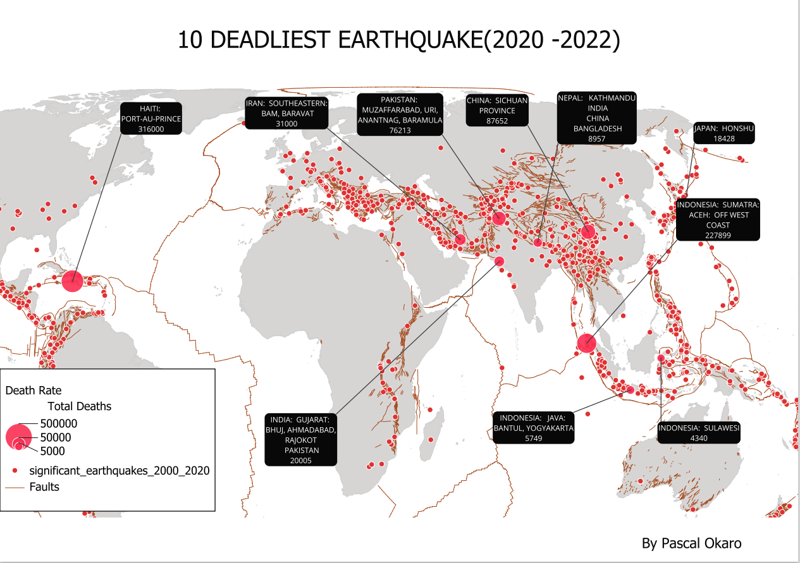
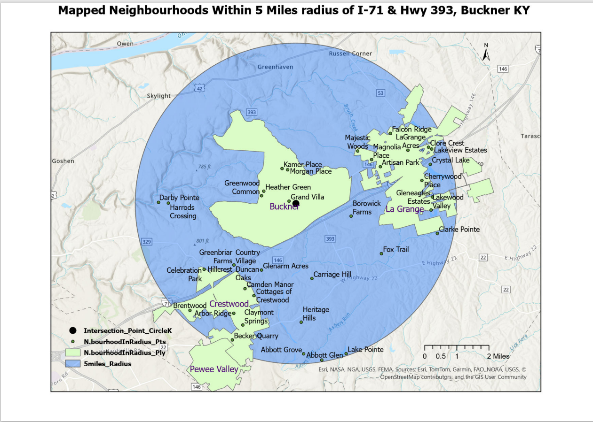

This project analyses public transport accessibility across Lancashire County Council by evaluating
the proportion of the population living within 400 metres of an active public transport stop.The analysis integrates spatial accessibility modelling with socio-demographic indicators (IMD and population structure) to identify areas with good, moderate, or poor access to public transport services..

Engineered a high-resolution 3D contamination model of refinery soil using QGIS,
transforming fragmented historical maps and multi-depth analytical datasets into
a unified, depth-stratified plume visualization. Applied georeferencing, spatial
data integration, attribute joins, data type transformation, and IDW interpolation
to delineate TPH contamination both horizontally and vertically. Delivered a
5-layer analytical layout that identified contamination hot spots, defined plume
boundaries, and assessed deep aquifer migration risk — directly supporting
remediation strategy and environmental risk decision-making.

Delivered a spatial intelligence model identifying $2M+ luxury single-family
residences within a 30-minute drive-time of Boca Raton’s Yamato Rd & US-441
intersection, transforming raw municipal parcel data into actionable high-net-worth
targeting insights. Applied isochrone analysis, spatial clipping, attribute
engineering, owner-occupancy logic, and gated-community classification to segment
properties by residency type and security profile. Packaged results into
multi-format deliverables (KMZ, CSV, PDF, ArcGIS package), enabling precision
marketing, investment analysis, and wealth-shed mapping for luxury-focused
stakeholders.

Authored a Global Seismic Risk Analysis using ArcGIS Pro, mapping the 10 deadliest
earthquakes from 2000–2022. Developed a multi-layered visualization integrating
tectonic fault lines with proportional death-toll symbology. Successfully communicated
complex humanitarian data by synthesizing raw USGS datasets into a high-impact cartographic
layout for disaster management stakeholders.

This project analyses the potential impact of sea level rise (SLR) on Germany’s coastal regions and
islands, focusing on simulated scenarios of 2 m and 4 m sea level rise.
The objective is to identify low-lying land areas that would become inundated, calculate the total
land area affected, and present the results in a way that supports risk assessment, spatial planning,
and climate adaptation strategies..

Designed and delivered a UK-wide renewable energy spatial intelligence dashboard using
the Renewable Energy Planning Database (REPD), transforming raw infrastructure data
into a capacity-driven geographic visualization of wind, solar, biomass, battery, and
emerging technologies. Applied advanced cartographic design, categorical symbology,
proportional scaling (0.15–1,800 MW), and coordinate projection to reveal regional
generation clusters and technology diversification patterns. The final output
provides a strategic view of national renewable capacity distribution, supporting
energy policy analysis, infrastructure investment decisions, and regional
planning strategy.

Engineered a spatial economic intelligence model of Leeds’ property market by
transforming April 2024 Land Registry transaction data into aggregated mean-price
clusters across the metropolitan region. Leveraged spatial joins, price aggregation
logic, and multi-variable cartographic symbology in ArcGIS Pro to reveal high-value
corridors and infrastructure-driven price patterns. Delivered a professionally
designed thematic map that correlates property value distribution with major
transport networks (M62, A6120, A660), providing actionable insights for investment
strategy, urban planning, and market positioning..

Conducted a subdivision-level spatial analysis to identify and map all residential
neighborhoods within a 5-mile radius of the I-71 & KY-393 interchange in Buckner, KY.Integrated
fragmented public datasets, standardized subdivision names, and resolved data gaps through
targeted geocoding and spatial validation. Generated a clean, decision-ready dataset
containing Map IDs, neighborhood names, and representative latitude/longitude coordinates.
Applied buffer analysis, proximity selection, geocoding, and attribute enhancement in
ArcGIS Pro, followed by professional cartographic layout design for both digital and
print deliverables. Packaged the project to ensure reproducibility and eliminate layer
path errors.